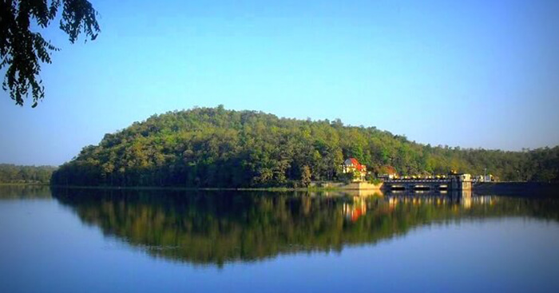

Khekranala lake
Khekranala, situated 65 km north of Nagpur in Khapa range is a beautiful dam site. Nestled on the Chhindwara Road near Khapa, Khekranala is an ideal spot for adventure seekers, specially for trekking. The major attraction here is the tranquil lake around the Khekranala Dam, surrounded by a dense forest with wide variety of flora and fauna.
The lush greenery, healthy climate and fascinating environment attracts tourists from different parts of the state. Maharahtra Tourism Development Corporation (MTDC) has developed lodging facilities for the visitors.